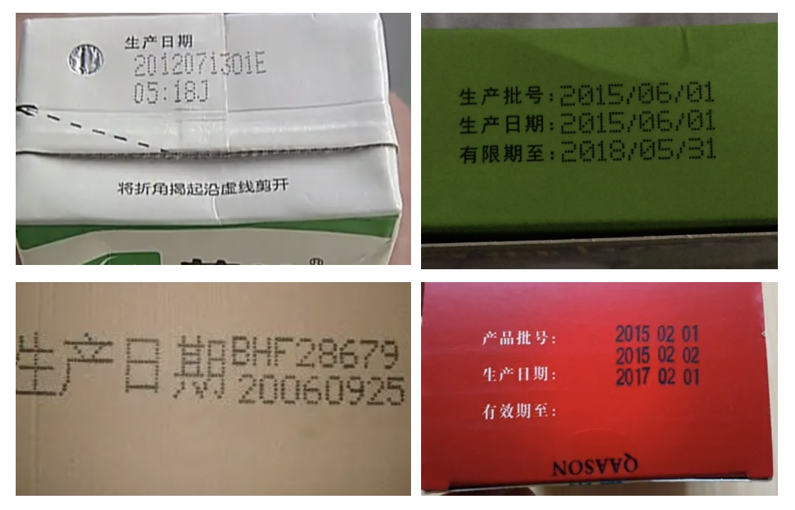

一种基于PaddleOCR的产品包装生产日期识别模型
1. 项目介绍
产品包装生产日期是计算机视觉图像识别技术在工业场景中的一种应用。产品包装生产日期识别技术要求能够将产品生产日期从复杂背景中提取并识别出来，在物流管理、物资管理中得到广泛应用。

项目难点
没有训练数据
图像质量层次不齐: 角度倾斜、图片模糊、光照不足、过曝等问题严重
针对以上问题， 本例选用PP-OCRv3这一开源超轻量OCR系统进行包装产品生产日期识别系统的开发。直接使用PP-OCRv3进行评估的精度为62.99%。为提升识别精度，我们首先使用数据合成工具合成了3k数据，基于这部分数据进行finetune，识别精度提升至73.66%。由于合成数据与真实数据之间的分布存在差异，为进一步提升精度，我们使用网络爬虫配合数据挖掘策略得到了1k带标签的真实数据，基于真实数据finetune的精度为71.33%。最后，我们综合使用合成数据和真实数据进行finetune，将识别精度提升至86.99%。各策略的精度提升效果如下：
策略
精度
PP-OCRv3评估
62.99
合成数据finetune
73.66
真实数据finetune
71.33
真实+合成数据finetune
86.99
AIStudio项目链接： 一种基于PaddleOCR的包装生产日期识别方法
2. 环境搭建
本任务基于Aistudio完成, 具体环境如下：
操作系统: Linux
PaddlePaddle: 2.3
PaddleOCR: Release/2.5
text_renderer: master
下载PaddlleOCR代码并安装依赖库:
clone -b dygraph https://gitee.com/paddlepaddle/PaddleOCR
# 安装依赖库
cd PaddleOCR
install -r PaddleOCR/requirements.txt
3. 数据准备
本项目使用人工预标注的300张图像作为测试集。
部分数据示例如下：
标签文件格式如下：
数据集下载链接 ，下载后可以通过下方命令解压:
-xvf data.tar
data ${ PaddleOCR_root }
数据解压后的文件结构如下：
data
├── mining_images # 挖掘的真实数据示例
├── mining_train.list # 挖掘的真实数据文件列表
├── render_images # 合成数据示例
├── render_train.list # 合成数据文件列表
├── val # 测试集数据
└── val.list # 测试集数据文件列表
| ├── bg # 合成数据所需背景图像
└── corpus # 合成数据所需语料
4. 直接使用PP-OCRv3模型评估
准备好测试数据后，可以使用PaddleOCR的PP-OCRv3模型进行识别。
下载预训练模型
首先需要下载PP-OCR v3中英文识别模型文件，下载链接可以在link 获取，下载命令:
cd ${ PaddleOCR_root }
ckpt
-nc -P ckpt https://paddleocr.bj.bcebos.com/PP-OCRv3/chinese/ch_PP-OCRv3_rec_train.tar
pushd ckpt/
-xvf ch_PP-OCRv3_rec_train.tar
popd
模型评估
使用以下命令进行PP-OCRv3评估:
tools/eval.py -c configs/rec/PP-OCRv3/ch_PP-OCRv3_rec_distillation.yml \
-o Global.checkpoints= ckpt/ch_PP-OCRv3_rec_train/best_accuracy \
Eval.dataset.data_dir= ./data \
Eval.dataset.label_file_list=[ "./data/val.list" ]
其中各参数含义如下：
指定使用的配置文件，ch_PP-OCRv3_rec_distillation.yml对应于OCRv3识别模型。
覆盖配置文件中参数
指定评估使用的模型文件路径
指定评估数据集路径
指定评估数据集文件列表
5. 基于合成数据finetune
5.1 Text Renderer数据合成方法
5.1.1 下载Text Renderer代码
首先从github或gitee下载Text Renderer代码，并安装相关依赖。
clone https://gitee.com/wowowoll/text_renderer.git
# 安装依赖库
cd text_renderer
install -r requirements.txt
使用text renderer合成数据之前需要准备好背景图片、语料以及字体库，下面将逐一介绍各个步骤。
5.1.2 准备背景图片
观察日常生活中常见的包装生产日期图片，我们可以发现其背景相对简单。为此我们可以从网上找一下图片，截取部分图像块作为背景图像。
本项目已准备了部分图像作为背景图片，在第3部分完成数据准备后,可以得到我们准备好的背景图像，示例如下：
背景图像存放于如下位置：
data
├── bg # 合成数据所需背景图像
5.1.3 准备语料
观察测试集生产日期图像，我们可以知道如下数据有如下特点：
由年月日组成，中间可能以“/”、“-”、“:”、“.”或者空格间隔，也可能以汉字年月日分隔
有些生产日期包含在产品批号中，此时可能包含具体时间、英文字母或数字标识
基于以上两点，我们编写语料生成脚本：
import random
from random import choice
import os
cropus_num = 2000 #设置语料数量
def get_cropus ( f ):
# 随机生成年份
year = random . randint ( 0 , 22 )
# 随机生成月份
month = random . randint ( 1 , 12 )
# 随机生成日期
day_dict = { 31 : [ 1 , 3 , 5 , 7 , 8 , 10 , 12 ], 30 : [ 4 , 6 , 9 , 11 ], 28 : [ 2 ]}
for item in day_dict :
if month in day_dict [ item ]:
day = random . randint ( 0 , item )
# 随机生成小时
hours = random . randint ( 0 , 24 )
# 随机生成分钟
minute = random . randint ( 0 , 60 )
# 随机生成秒数
second = random . randint ( 0 , 60 )
# 随机生成产品标识字符
length = random . randint ( 0 , 6 )
file_id = []
flag = 0
my_dict = [ i for i in range ( 48 , 58 )] + [ j for j in range ( 40 , 42 )] + [ k for k in range ( 65 , 90 )] # 大小写字母 + 括号
for i in range ( 1 , length ):
if flag :
if i == flag + 2 : #括号匹配
file_id . append ( ')' )
flag = 0
continue
sel = choice ( my_dict )
if sel == 41 :
continue
if sel == 40 :
if i == 1 or i > length - 3 :
continue
flag = i
my_ascii = chr ( sel )
file_id . append ( my_ascii )
file_id_str = '' . join ( file_id )
#随机生成产品标识字符
file_id2 = random . randint ( 0 , 9 )
rad = random . random ()
if rad < 0.3 :
f . write ( '20 {:02d}{:02d}{:02d} {} ' . format ( year , month , day , file_id_str ))
elif 0.3 < rad < 0.5 :
f . write ( '20 {:02d} 年 {:02d} 月 {:02d} 日' . format ( year , month , day ))
elif 0.5 < rad < 0.7 :
f . write ( '20 {:02d} / {:02d} / {:02d} ' . format ( year , month , day ))
elif 0.7 < rad < 0.8 :
f . write ( '20 {:02d} - {:02d} - {:02d} ' . format ( year , month , day ))
elif 0.8 < rad < 0.9 :
f . write ( '20 {:02d} . {:02d} . {:02d} ' . format ( year , month , day ))
else :
f . write ( ' {:02d} : {:02d} : {:02d} {:02d} ' . format ( hours , minute , second , file_id2 ))
if __name__ == "__main__" :
file_path = '/home/aistudio/text_renderer/my_data/cropus'
if not os . path . exists ( file_path ):
os . makedirs ( file_path )
file_name = os . path . join ( file_path , 'books.txt' )
f = open ( file_name , 'w' )
for i in range ( cropus_num ):
get_cropus ( f )
if i < cropus_num - 1 :
f . write ( ' \n ' )
f . close ()
本项目已准备了部分语料，在第3部分完成数据准备后,可以得到我们准备好的语料库，默认位置如下：
data
└── corpus #合成数据所需语料
5.1.4 下载字体
观察包装生产日期，我们可以发现其使用的字体为点阵体。字体可以在如下网址下载：
https://www.fonts.net.cn/fonts-en/tag-dianzhen-1.html
本项目已准备了部分字体，在第3部分完成数据准备后,可以得到我们准备好的字体，默认位置如下：
data
└── fonts #合成数据所需字体
下载好字体后，还需要在list文件中指定字体文件存放路径，脚本如下:
cd text_renderer/my_data/
fonts.list
/home/aistudio/PaddleOCR/data/fonts/* > fonts.list
5.1.5 运行数据合成命令
完成数据准备后，my_data文件结构如下：
cropus
└── books.txt #语料库
eng.txt #字符列表
fonts.list #字体列表
在运行合成数据命令之前，还有两处细节需要手动修改：
将默认配置文件text_renderer/configs/default.yaml中第9行enable的值设为true，即允许合成彩色图像。否则合成的都是灰度图。
# color boundary is in R,G,B format
font_color :
+ enable : true #false
将text_renderer/textrenderer/renderer.py第184行作如下修改，取消padding。否则图片两端会有一些空白。
padding = random . randint ( s_bbox_width // 10 , s_bbox_width // 8 ) #修改前
padding = 0 #修改后
运行数据合成命令:
cd /home/aistudio/text_renderer/
main.py --num_img= 3000 \
--fonts_list= './my_data/fonts.list' \
--corpus_dir "./my_data/cropus" \
--corpus_mode "list" \
--bg_dir "/home/aistudio/PaddleOCR/data/bg/" \
--img_width 0
合成好的数据默认保存在text_renderer/output目录下，可进入该目录查看合成的数据。
合成数据示例如下
数据合成好后，还需要生成如下格式的训练所需的标注文件，
使用如下脚本即可生成标注文件：
import random
abspath = '/home/aistudio/text_renderer/output/default/'
#标注文件生成路径
fout = open ( './render_train.list' , 'w' , encoding = 'utf-8' )
with open ( './output/default/tmp_labels.txt' , 'r' ) as f :
lines = f . readlines ()
for item in lines :
label = item [ 9 :]
filename = item [: 8 ] + '.jpg'
fout . write ( abspath + filename + ' \t ' + label )
fout . close ()
经过以上步骤，我们便完成了包装生产日期数据合成。
数据位于text_renderer/output，标注文件位于text_renderer/render_train.list。
本项目提供了生成好的数据供大家体验,完成步骤3的数据准备后，可得数据路径位于:
data
├── render_images # 合成数据示例
├── render_train.list #合成数据文件列表
5.2 模型训练
准备好合成数据后，我们可以使用以下命令，利用合成数据进行finetune:
cd ${ PaddleOCR_root }
tools/train.py -c configs/rec/PP-OCRv3/ch_PP-OCRv3_rec_distillation.yml \
-o Global.pretrained_model= ./ckpt/ch_PP-OCRv3_rec_train/best_accuracy \
Global.epoch_num= 20 \
Global.eval_batch_step= '[0, 20]' \
Train.dataset.data_dir= ./data \
Train.dataset.label_file_list=[ './data/render_train.list' ] \
Train.loader.batch_size_per_card= 64 \
Eval.dataset.data_dir= ./data \
Eval.dataset.label_file_list=[ "./data/val.list" ] \
Eval.loader.batch_size_per_card= 64
其中各参数含义如下：
6. 基于真实数据finetune
使用合成数据finetune能提升我们模型的识别精度，但由于合成数据和真实数据之间的分布可能有一定差异，因此作用有限。为进一步提高识别精度，本节介绍如何挖掘真实数据进行模型finetune。
数据挖掘的整体思路如下：
使用python爬虫从网上获取大量无标签数据
使用模型从大量无标签数据中构建出有效训练集
6.1 python爬虫获取数据
推荐使用爬虫工具 获取无标签图片。图片获取后，可按如下目录格式组织：
6.2 数据挖掘
我们使用PaddleOCR对获取到的图片进行挖掘，具体步骤如下：
使用 PP-OCRv3检测模型+svtr-tiny识别模型，对每张图片进行预测。
使用数据挖掘策略，得到有效图片。
将有效图片对应的图像区域和标签提取出来，构建训练集。
首先下载预训练模型，PP-OCRv3检测模型下载链接：https://paddleocr.bj.bcebos.com/PP-OCRv3/chinese/ch_PP-OCRv3_det_infer.tar
完成下载后，可将模型存储于如下位置:
data
├── rec_vit_sub_64_363_all/ # svtr_tiny高精度识别模型
# 下载解压PP-OCRv3检测模型
cd ${ PaddleOCR_root }
-nc -P ckpt https://paddleocr.bj.bcebos.com/PP-OCRv3/chinese/ch_PP-OCRv3_det_infer.tar
pushd ckpt
-xvf ch_PP-OCRv3_det_infer.tar
popd ckpt
在使用PPOCRv3检测模型+svtr-tiny识别模型进行预测之前，有如下两处细节需要手动修改：
将tools/infer/predict_rec.py中第110行imgW修改为320
#imgW = int((imgH * max_wh_ratio))
imgW = 320
将tools/infer/predict_system.py第169行添加如下一行，将预测分数也写入结果文件中。
"scores" : rec_res [ idx ][ 1 ],
模型预测命令:
tools/infer/predict_system.py \
--image_dir= "/home/aistudio/sprider/data" \
--det_model_dir= "./ckpt/ch_PP-OCRv3_det_infer/" \
--rec_model_dir= "/home/aistudio/PaddleOCR/data/rec_vit_sub_64_363_all/" \
--rec_image_shape= "3,32,320"
获得预测结果后，我们使用数据挖掘策略得到有效图片。具体挖掘策略如下：
预测置信度高于95%
识别结果包含字符‘20’，即年份
没有中文，或者有中文并且‘日’和'月'同时在识别结果中
# 获取有效预测
import json
import re
zh_pattern = re . compile ( u '[ \u4e00 - \u9fa5 ]+' ) #正则表达式，筛选字符是否包含中文
file_path = '/home/aistudio/PaddleOCR/inference_results/system_results.txt'
out_path = '/home/aistudio/PaddleOCR/selected_results.txt'
f_out = open ( out_path , 'w' )
with open ( file_path , "r" , encoding = 'utf-8' ) as fin :
lines = fin . readlines ()
for line in lines :
flag = False
# 读取文件内容
file_name , json_file = line . strip () . split ( ' \t ' )
preds = json . loads ( json_file )
res = []
for item in preds :
transcription = item [ 'transcription' ] #获取识别结果
scores = item [ 'scores' ] #获取识别得分
# 挖掘策略
if scores > 0.95 :
if '20' in transcription and len ( transcription ) > 4 and len ( transcription ) < 12 :
word = transcription
if not ( zh_pattern . search ( word ) and ( '日' not in word or '月' not in word )):
flag = True
res . append ( item )
save_pred = file_name + " \t " + json . dumps (
res , ensure_ascii = False ) + " \n "
if flag == True :
f_out . write ( save_pred )
f_out . close ()
然后将有效预测对应的图像区域和标签提取出来，构建训练集。具体实现脚本如下：
import cv2
import json
import numpy as np
PATH = '/home/aistudio/PaddleOCR/inference_results/' #数据原始路径
SAVE_PATH = '/home/aistudio/mining_images/' #裁剪后数据保存路径
file_list = '/home/aistudio/PaddleOCR/selected_results.txt' #数据预测结果
label_file = '/home/aistudio/mining_images/mining_train.list' #输出真实数据训练集标签list
if not os . path . exists ( SAVE_PATH ):
os . mkdir ( SAVE_PATH )
f_label = open ( label_file , 'w' )
def get_rotate_crop_image ( img , points ):
"""
根据检测结果points，从输入图像img中裁剪出相应的区域
"""
assert len ( points ) == 4 , "shape of points must be 4*2"
img_crop_width = int (
max (
np . linalg . norm ( points [ 0 ] - points [ 1 ]),
np . linalg . norm ( points [ 2 ] - points [ 3 ])))
img_crop_height = int (
max (
np . linalg . norm ( points [ 0 ] - points [ 3 ]),
np . linalg . norm ( points [ 1 ] - points [ 2 ])))
pts_std = np . float32 ([[ 0 , 0 ], [ img_crop_width , 0 ],
[ img_crop_width , img_crop_height ],
[ 0 , img_crop_height ]])
M = cv2 . getPerspectiveTransform ( points , pts_std )
# 形变或倾斜，会做透视变换，reshape成矩形
dst_img = cv2 . warpPerspective (
img ,
M , ( img_crop_width , img_crop_height ),
borderMode = cv2 . BORDER_REPLICATE ,
flags = cv2 . INTER_CUBIC )
dst_img_height , dst_img_width = dst_img . shape [ 0 : 2 ]
if dst_img_height * 1.0 / dst_img_width >= 1.5 :
dst_img = np . rot90 ( dst_img )
return dst_img
def crop_and_get_filelist ( file_list ):
with open ( file_list , "r" , encoding = 'utf-8' ) as fin :
lines = fin . readlines ()
img_num = 0
for line in lines :
img_name , json_file = line . strip () . split ( ' \t ' )
preds = json . loads ( json_file )
for item in preds :
transcription = item [ 'transcription' ]
points = item [ 'points' ]
points = np . array ( points ) . astype ( 'float32' )
#print('processing {}...'.format(img_name))
img = cv2 . imread ( PATH + img_name )
dst_img = get_rotate_crop_image ( img , points )
h , w , c = dst_img . shape
newWidth = int (( 32. / h ) * w )
newImg = cv2 . resize ( dst_img , ( newWidth , 32 ))
new_img_name = ' {:05d} .jpg' . format ( img_num )
cv2 . imwrite ( SAVE_PATH + new_img_name , dst_img )
f_label . write ( SAVE_PATH + new_img_name + ' \t ' + transcription + ' \n ' )
img_num += 1
crop_and_get_filelist ( file_list )
f_label . close ()
6.3 模型训练
通过数据挖掘，我们得到了真实场景数据和对应的标签。接下来使用真实数据finetune，观察精度提升效果。
利用真实数据进行finetune:
cd ${ PaddleOCR_root }
tools/train.py -c configs/rec/PP-OCRv3/ch_PP-OCRv3_rec_distillation.yml \
-o Global.pretrained_model= ./ckpt/ch_PP-OCRv3_rec_train/best_accuracy \
Global.epoch_num= 20 \
Global.eval_batch_step= '[0, 20]' \
Train.dataset.data_dir= ./data \
Train.dataset.label_file_list=[ './data/mining_train.list' ] \
Train.loader.batch_size_per_card= 64 \
Eval.dataset.data_dir= ./data \
Eval.dataset.label_file_list=[ "./data/val.list" ] \
Eval.loader.batch_size_per_card= 64
各参数含义参考第6部分合成数据finetune，只需要对训练数据路径做相应的修改：
示例使用我们提供的真实数据进行finetune，如想换成自己的数据，只需要相应的修改Train.dataset.data_dir和Train.dataset.label_file_list参数即可。
由于数据量不大，这里仅训练20个epoch即可。训练完成后，可以得到合成数据finetune后的精度为best acc=71.33% 。
由于数量比较少，精度会比合成数据finetue的略低。
7. 基于合成+真实数据finetune
为进一步提升模型精度，我们结合使用合成数据和挖掘到的真实数据进行finetune。
利用合成+真实数据进行finetune，各参数含义参考第6部分合成数据finetune，只需要对训练数据路径做相应的修改：
生成训练list文件:
# 生成训练集文件list
/home/aistudio/PaddleOCR/data/render_train.list /home/aistudio/PaddleOCR/data/mining_train.list > /home/aistudio/PaddleOCR/data/render_mining_train.list
启动训练:
cd ${ PaddleOCR_root }
tools/train.py -c configs/rec/PP-OCRv3/ch_PP-OCRv3_rec_distillation.yml \
-o Global.pretrained_model= ./ckpt/ch_PP-OCRv3_rec_train/best_accuracy \
Global.epoch_num= 40 \
Global.eval_batch_step= '[0, 20]' \
Train.dataset.data_dir= ./data \
Train.dataset.label_file_list=[ './data/render_mining_train.list' ] \
Train.loader.batch_size_per_card= 64 \
Eval.dataset.data_dir= ./data \
Eval.dataset.label_file_list=[ "./data/val.list" ] \
Eval.loader.batch_size_per_card= 64
示例使用我们提供的真实+合成数据进行finetune，如想换成自己的数据，只需要相应的修改Train.dataset.data_dir和Train.dataset.label_file_list参数即可。
由于数据量不大，这里仅训练40个epoch即可。训练完成后，可以得到合成数据finetune后的精度为best acc=86.99% 。
可以看到，相较于原始PP-OCRv3的识别精度62.99%，使用合成数据+真实数据finetune后，识别精度能提升24%。
模型的推理部署方法可以参考repo文档： docs